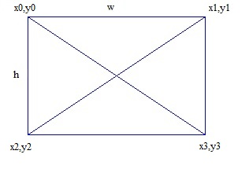
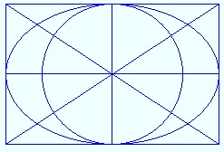
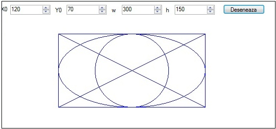
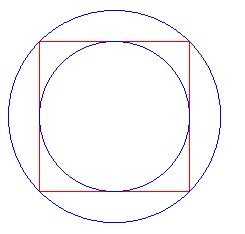
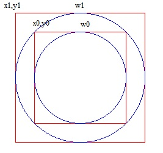
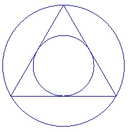
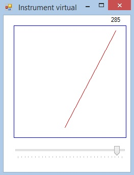
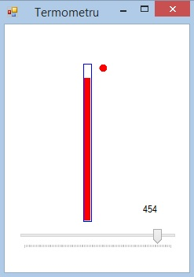

Instructiunea if
Se citeste de la tastatura un numar intreg. In functie de numarul introdus, afisati:
"Numarul este par" sau "Numarul este impar"
"Numarul este divizibil cu 7" sau "Numarul este indivizibil cu 7"
"Numarul este par" sau "Numarul este impar pozitiv" sau "Numarul este impar negativ"
"Numarul este par pozitiv" "Numarul este par negativ "sau "Numarul este impar pozitiv" sau "Numarul este impar negativ"
"Numarul este par pozitiv" "Numarul este par negativ "sau "Numarul este impar pozitiv" sau "Numarul este impar negativ" sau "Numarul este zero"
Daca numarul este par afisati-l sub forma binara cu functia afis_bin() iar daca e impar afisati-l sub forma binara cu functia afis_binar()
Instructiunea if, else if
Se citesc de la tastatura doua numere intregi.
Se afiseaza meniul:
Suma celor doua numere este:
Diferenta celor doua numere este:
Produsul celor doua numere este:
Raportul celor doua numere este:
Se asteapta apasarea tastei corespunzatoare din meniu
se afiseaza raspunsul corespunzator
Instructiuni if imbricate
Realizati o aplicatie care cere nota obtinuta si la ce proba (examen, licenta). Promovarea se face cu nota >=5 la examen si
cu nota>= 7 la licenta. In functie de datele introduse, afisati mesajele:
Ati fost respins la examen cu nota:
Ati fost admis la examen cu nota:
Ati fost respins la licenta cu nota:
Ati fost admis la licenta cu nota:
Instructiunea switch
Se reia aplicatia pentru calculul sumei, produsului, diferentei, raportului si se implementeaza folosint instructiunea switch
Se afiseaza unul din textele de mai jos, in functie de litera apasata (a,b,c)
a. Facultatea de Inginerie
b. Facultatea de Stiinte si litere
c. Facultatea de Stiinte Economice
Operatori logici
Se considera un circuit avand 3 comutatoare k1,k2,k3, unde K1 si k2 sunt im paralel iar k3 in serie .
Realizati o aplicatie in care cereti starea celor trei comutatoare
Afisati textul "Circuitul este deschis" sau " Circuitul este inchis" in functie de starea comutatoarelor
Instructiunea if folosita in WFA
Folositi un control numericUpDown. In functie de numarul introdus, afisati intr-un Label:
"Numarul este par" sau "Numarul este impar"
"Numarul este divizibil cu 7" sau "Numarul este indivizibil cu 7"
"Numarul este par" sau "Numarul este impar pozitiv" sau "Numarul este impar negativ"
"Numarul este par pozitiv" "Numarul este par negativ "sau "Numarul este impar pozitiv" sau "Numarul este impar negativ"
"Numarul este par pozitiv" "Numarul este par negativ "sau "Numarul este impar pozitiv" sau "Numarul este impar negativ" sau "Numarul este zero"
Realizati un ceas digital care afiseaza data si ora cu culoare albastra daca secundele sunt pare si cu rosu daca secundele sunt impare
Implementati un buton Start/Stop
Se reia aplicatia ppentru comanda unui calculator. Se mai adauga optiunea Server Station. Folosin Pannel se mai adauga un grup de radio button cu
optiunile Sistem de operare : Windows, Linux , Solaris, MAC-OS.
Realizati o aplicatie grafica pentru a desena un treptunghiuri pe orizontala sau pe verticala in functie de optiunea selectata intr-un radio button
Realizati o aplicatie grafica pentru a desena un dreptungi si diagonala principala sau diagonala secundara in functie de optiunea selectata
intr-un radio button.

Se dau coordonatele x0, y0, latimea w si inaltimea h ale dreptunghiului. In functie de aceste coordonate se vor calcula coordonatele dreptei care
reprezinta diagonala principala si anume perechea (x0,y0) - (x3,y3) precuum si coordonatele dreptei care reprezinta diagonala secundara si anume
perechea (x1,y1) - (x2,y2).
Realizati o aplicatie grafica pentru a desena figura de mai jos

Adaugati 4 controale NumericUpDown pentru a modifica x0,y0,w,h

Realizati o aplicatie grafica pentru a desena un patrat si un cerc inscris in patrat sau circumscris acestuia in functie de optiunea selectata
intr-un radio button.

Se dau coordonatele x0, y0, si latimea w0 ale patratului.In functie de aceste coordonate se vor calcula coordonatele x1,y1 si w1
ale cercului circumscris.

Realizati o aplicatie grafica pentru a desena un triunghi echilateral si un cerc inscris in triunghi sau circumscris acestuia in functie de
optiunea selectata intr-un radio button.

Se dau coordonatele x1, y1, ale varfului triunghiului si l lungimea laturii. In functie de aceste coordonate
se vor calcula coordonatele x2,y2 si x3,y3 ale celorlalte doua varfuri ale triunghiului precum si coordonatele
x4,y4,w1 ale cercului inscris respectiv x5,y5,w2 ale cercului circumscris.
Simulati un instrument virtual de forma celui din imaginea de jos.

Colorati in rosu indicatorul daca valoarea afisata depaseste 90% din valoarea maxima
Deplasati acul indicator pe in arc de cerc nu pe o dreapta.
Simulati un termometru virtual de forma celui din imaginea de jos.

Colorati in rosu indicatorul si aprindeti un led rosu daca valoarea afisata depaseste 90% din valoarea maxima
Realizati un sistem de afisare grafica de forma celui din imaginea de jos.